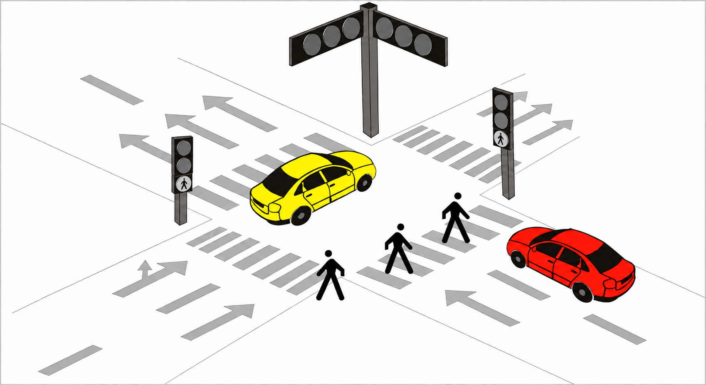

SIMULADOR INTERACTIVO
Control de cruce semaforizado
Seguimiento independiente de semáforos vehiculares y peatonales.
Detenido

Fase actual
Vía A en verde
La vía A está habilitada y el cruce peatonal izquierdo está en verde.